僕のヒーローアカデミア - Boku no Hīrō Akademia
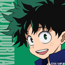
Midoriya
Deku
Izuku Midoriya (緑みどり谷や出いず久く - Midoriya Izuku), também conhecido como Deku (デク?),
é o principal protagonista da série de mangá e anime My Hero Academia..
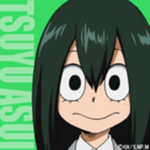
Asui Tsuyu
Froppy
Tsuyu Asui (蛙あ吹すい梅つ雨ゆ - Asui Tsuyu), também conhecida como Froppy,
é uma estudante da U.A. É umas das principais coadjuvantes de My Hero Academia.
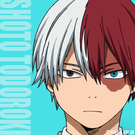
Todoroki Shōto
Todoroki
Shoto Todoroki (轟とどろき焦しょう凍と - Todoroki Shōto) é um deuteragonista de My Hero Academia.
É filho de Endeavor e amigo de Izuku Midoriya.

Kyoka Jiro
Earphone Jack
Kyoka Jiro (耳じ郎ろう響きょう香か - Jīrō Kyōka)também conhecida como Earphone Jack, é estudante da U.A.
High, aluna da Classe 1-A, que está treinando para se tornar uma heroína profissional.
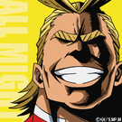
All Might
Yagi Toshinori
Toshinori Yagi (八や木ぎ俊と し典の り - Yagi Toshinori), mais conhecido por seu nome de herói,All Might(オ ー ル マ イ トŌru Maito ? ) , é o tritagonista de My Hero Academia e o protagonista do arco do Hideout Raid Arc. All Might é o
ex-herói profissionalnº 1 que carregou o título de Símbolo da Paz do mundo.
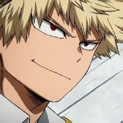
Bakugo
Great Explosion Murder God Dynamight
Katsuki Bakugo (爆ばく豪ごう勝かつ己き - Bakugō Katsuki), também conhecido por sua identidade heróica de Great Explosion Murder God Dynamight (大だい•爆ばく•殺さつ•神しんダイナマイト Daibakusatsu-Shin Dainamaito?) ou apenas Dynamight,
é um deuteragonista de My Hero Academia. É o rival do protagonista, Izuku Midoriya..
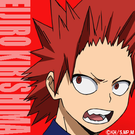
Eijiro Kirishima
Red Riot
Eijiro Kirishima (切きり島しま鋭えい児じ郎ろう - Kirishima Eijirō),
também conhecido como Red Riot, é um estudante da U.A. É um dos coadjuvantes principais de My Hero Academia.
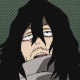
Shota Aizawa
Eraser Head
Shota Aizawa (相澤消太 Aizawa Shōta) mais conhecido pelo seu nome de herói Eraser Head (イレイザーヘッド)
Também conhecido como o herói Erasure: Eraser Head (イレイザー·ヘッド) ,
É um Pro herói e o professor de sala de UA Grau de Classe 1-A.
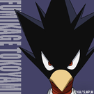
Fumikage Tokoyami
Tsukuyomi
Fumikage Tokoyami (常とこ闇やみ踏ふみ陰かげ - Tokoyami Fumikage), também conhecido como Tsukuyomi,
é um estudante da U.A. É um dos principais coadjuvantes de My Hero Academia.
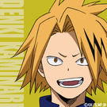
Kaminari Denki
Chargezuma
Denki Kaminari (上かみ鳴なり電でん気き - Kaminari Denki), também conhecido como Chargezuma,
é um estudante da U.A. É um dos coadjuvantes principais de My Hero Academia.
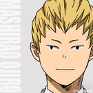
Mashirao Ojiro
Tailman
Mashirao Ojiro (尾白猿夫 Ojiro Mashirao), também conhecido como Tailman, é um personagem secundário e estudante da U.A.
High da Classe 1-A que está treinando para ser um herói profissional.
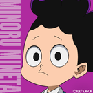
Minoru Mineta
Grape Juice
Minoru Mineta (峰みね田た実みのる - Mineta Minoru), também conhecido como Grape Juice, é um estudante da U.A.
É um dos principais personagens coadjuvantes de My Hero Academia.
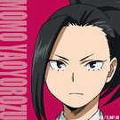
Momo Yaoyorozu
Creati
Momo Yaoyorozu (八や百お万よろず百もも - Yaoyorozu Momo), também conhecida como Creati, é uma estudante da U.A. que está treinando para se tornar uma heroína profissional.
Ela é a Vice-Presidente da Classe 1-A e entrou para a U.A por recomendações oficiais.
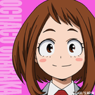
Ochaco Uraraka
Uravity
Ochaco Uraraka (麗うらら日かお茶ちゃ子こ - Uraraka Ochako), também conhecida
como Uravity (ウラビティ Urabiti), é uma estudante da U.A e
interesse romântico de Izuku Midoriya. É uma das protagonistas de My Hero Academia.
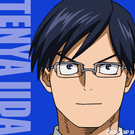
Tenya Iida
Ingenium
Tenya Iida (飯いい田だ天てん哉や - Īda Ten'ya), também conhecido como Ingenium, é um estudante da U.A, irmão de Tensei Iida e
amigo de Izuku Midoriya. É um dos deuteragonistas de My Hero Academia.
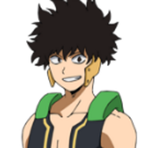
Yo Shindo
Estudante da Ketsubutsu
Yo Shindo (真堂しんどう揺よう Shindō Yō) é um estudante da Ketsubutsu.